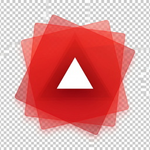

<!doctype html>
<html lang="ja">
  <head>
    <meta charset="UTF-8" />
    <meta name="viewport" content="width=device-width, initial-scale=1.0" />
    <title>gashuu - Fast, elegant manga / comic reader</title>
    <meta name="description" content="gashuu is a fast, elegant manga / comic reader for immersive viewing." />
    <link rel="preconnect" href="https://fonts.googleapis.com" />
    <link rel="preconnect" href="https://fonts.gstatic.com" crossorigin />
    <link href="https://fonts.googleapis.com/css2?family=Inter:wght@400;500;700&family=Noto+Sans+JP:wght@400;500;700&display=swap" rel="stylesheet" />
    <script src="https://cdn.jsdelivr.net/npm/@tailwindcss/browser@4"></script>
    <script crossorigin src="https://unpkg.com/react@18/umd/react.production.min.js"></script>
    <script crossorigin src="https://unpkg.com/react-dom@18/umd/react-dom.production.min.js"></script>
    <script src="https://unpkg.com/@babel/standalone@7/babel.min.js"></script>
    <style type="text/tailwindcss">
      @theme {
        --font-sans: Inter, "Noto Sans JP", ui-sans-serif, system-ui, -apple-system, BlinkMacSystemFont, "Segoe UI", sans-serif;
        --color-ink: #111116;
        --color-paper: #fffaf0;
        --color-manga: #f2e7cf;
        --color-sumi: #1b1a18;
        --color-vermilion: #f35f3d;
        --color-matcha: #95b46a;
      }
      @utility soft-shadow { box-shadow: 0 24px 80px rgba(32, 23, 10, .14), 0 4px 18px rgba(32, 23, 10, .08); }
      @utility grid-bg { background-image: radial-gradient(rgba(17,17,22,.08) 1px, transparent 1px); background-size: 22px 22px; }

      /*
        Typography system
        - Type: Inter (Latin / numerals) + Noto Sans JP (Japanese). Japanese glyphs
          fall through the Latin face automatically, so each script keeps its own
          metrics and weights.
        - Base: 17px · golden-ratio body leading (1.618).
        - Kerning: Inter carries optical Latin kerning; Japanese is kerned with the
          `palt` proportional-alternates feature so full-width punctuation no longer
          opens large gaps — the CJK counterpart of tight display tracking. Display
          tracking is therefore moderate (palt does the close-fitting work).
        - Weight ladder (lighter display register, hierarchy by size): 500 medium
          hero & section · 700 small labels / subsection / card / buttons · 400 body.
          Only 400 / 500 / 700 are loaded so every step maps to a real weight.
        - Rhythm: Fibonacci vertical scale 13 / 21 / 34 / 55 / 89 / 144 (rhythm-*),
          used for stacks, gaps, and section padding so the page breathes on one grid.
      */
      @layer base {
        html {
          font-size: 17px;
          text-rendering: optimizeLegibility;
          -webkit-font-smoothing: antialiased;
          -moz-osx-font-smoothing: grayscale;
        }
        body {
          line-height: 1.618;
          /* Neutral default tracking; each type-* tier owns its own tracking so CJK
             body runs are not tightened by a global negative value. */
          letter-spacing: 0;
          /* Kern Japanese punctuation / spacing proportionally across the page. */
          font-feature-settings: "palt" 1;
          font-kerning: normal;
        }
      }

      @layer utilities {
        .type-kicker {
          font-size: clamp(0.72rem, 0.69rem + 0.12vw, 0.82rem);
          line-height: 1;
          letter-spacing: 0.16em;
          text-transform: uppercase;
          font-weight: 700;
        }
        .type-nav {
          font-size: clamp(0.82rem, 0.79rem + 0.10vw, 0.94rem);
          line-height: 1.2;
          letter-spacing: -0.006em;
        }
        .type-hero {
          /* One line on desktop for the short Japanese hero; palt keeps it compact.
             Medium weight for an elegant, editorial display tone (per design review);
             tracking near-neutral so palt — not negative letter-spacing — does the
             CJK close-fitting. */
          font-size: clamp(2rem, 1.42rem + 2.2vw, 3.4375rem);
          line-height: 1.06;
          letter-spacing: -0.01em;
          font-weight: 500;
        }
        .type-section {
          /* Hero / φ ≒ 2.5rem, nudged to 2.62rem for Japanese display clarity.
             Shares the medium register; hierarchy comes from size, not weight. */
          font-size: clamp(1.62rem, 1.24rem + 1.35vw, 2.62rem);
          line-height: 1.14;
          letter-spacing: -0.012em;
          font-weight: 500;
        }
        .type-subsection {
          font-size: clamp(1.31rem, 1.18rem + 0.55vw, 1.62rem);
          line-height: 1.2;
          letter-spacing: -0.02em;
          font-weight: 700;
        }
        .type-card-title {
          font-size: clamp(1.00rem, 0.96rem + 0.18vw, 1.13rem);
          line-height: 1.4;
          letter-spacing: -0.014em;
          font-weight: 700;
        }
        .type-lead {
          font-size: clamp(1.00rem, 0.96rem + 0.20vw, 1.13rem);
          line-height: 1.72;
          letter-spacing: -0.008em;
          font-weight: 400;
        }
        .type-body {
          font-size: clamp(0.94rem, 0.91rem + 0.12vw, 1.00rem);
          line-height: 1.75;
          letter-spacing: -0.002em;
          font-weight: 400;
        }
        .measure-phi {
          max-width: 38.2rem;
        }
        .measure-copy {
          /* Wider lead measure: 55rem Fibonacci anchor, balanced against the one-line hero. */
          max-width: 55rem;
        }
        .rhythm-13 { margin-top: 0.8125rem; }
        .rhythm-21 { margin-top: 1.3125rem; }
        .rhythm-34 { margin-top: 2.125rem; }
        .rhythm-55 { margin-top: 3.4375rem; }
        .rhythm-89 { margin-top: 5.5625rem; }
        .rhythm-144 { margin-top: 9rem; }
      }
    </style>
  </head>
  <body class="bg-paper text-ink antialiased selection:bg-vermilion selection:text-white">
    <div id="root"></div>

    <script type="text/babel">
      const { useState, useEffect } = React;

      function Badge({ children, tone = 'light' }) {
        // tone="dark" for use on the dark (#workflow) band so the tracked label keeps
        // light text on a faint translucent pill instead of the light-mode chip.
        const styles = tone === 'dark'
          ? "border-white/15 bg-white/[.06] text-white/70"
          : "border-black/10 bg-white/70 text-black/70";
        return <span className={`type-kicker inline-flex items-center gap-2 rounded-full border px-3 py-1.5 backdrop-blur ${styles}`}>{children}</span>;
      }

      function Button({ children, variant = 'primary', href = '#download' }) {
        const base = "type-nav inline-flex items-center justify-center rounded-full px-5 py-3 font-bold transition hover:-translate-y-0.5 active:translate-y-0";
        const styles = variant === 'primary'
          ? "bg-ink text-white shadow-xl shadow-black/15 hover:bg-black"
          : "border border-black/10 bg-white/70 text-ink backdrop-blur hover:bg-white";
        return <a href={href} className={`${base} ${styles}`}>{children}</a>;
      }
      const shots = [
        { src: 'assets/viewer-screenshot.png', width: 1277, height: 1280, alt: 'gashuu viewer with a two-page spread and thumbnail strip' },
        { src: 'assets/library-carousel.png', width: 1100, height: 834, alt: 'gashuu library with the cover-flow carousel' },
      ];

      function MockViewer() {
        const [shot, setShot] = useState(0);
        useEffect(() => {
          if (window.matchMedia('(prefers-reduced-motion: reduce)').matches) return;
          // Keyed on the current slide so a manual dot click re-arms a full 6s window.
          const timer = setInterval(() => setShot((i) => (i + 1) % shots.length), 6000);
          return () => clearInterval(timer);
        }, [shot]);
        return (
          <div className="mx-auto w-full max-w-6xl">
            {/* Sized by the tallest (square) shot; other shots float centered inside. */}
            <div className="relative mx-auto aspect-[1277/1280] w-full max-w-[1277px]">
              {shots.map((s, i) => (
                
              ))}
            </div>
            <div className="rhythm-34 flex justify-center gap-2">
              {shots.map((s, i) => (
                <button
                  key={s.src}
                  type="button"
                  aria-label={`Show screenshot ${i + 1} of ${shots.length}`}
                  aria-current={i === shot ? 'true' : undefined}
                  onClick={() => setShot(i)}
                  className={`h-2.5 w-2.5 rounded-full transition ${i === shot ? 'bg-vermilion' : 'bg-black/20 hover:bg-black/40'}`}
                ></button>
              ))}
            </div>
          </div>
        );
      }

      const features = [
        ['IMPORT', 'どんな漫画も', 'フォルダもCBZ/ZIP/CBR/RARも自動判定。中身を見て適切に読み込みます。'],
        ['READ', '気持ちよく読む', '単ページ/見開き/Auto、RTL/LTR、フィットを作品ごとに記憶。キャッシュとプリロードでテンポよくめくれます。'],
        ['RETURN', '続きへ戻る', '進捗、最近読んだ本、最後のページを保存。サムネイルやスクラブで探したい場面にもすぐ戻れます。']
      ]

      function App() {
        return (
          <div className="overflow-hidden">
            <header className="fixed inset-x-0 top-0 z-50 border-b border-black/5 bg-paper/80 backdrop-blur-xl">
              <nav className="mx-auto grid max-w-7xl grid-cols-[1fr_auto_1fr] items-center px-5 py-4">
                <a href="#" className="flex items-center gap-3 font-bold tracking-tight justify-self-start">
                  
                  <span>gashuu</span>
                </a>
                <div className="type-nav hidden items-center gap-7 font-bold text-black/62 md:flex md:justify-self-center">
                  <a href="#workflow" className="hover:text-black">機能</a>
                  <a href="https://github.com/yasuflatland-lf/gashuu/releases" className="hover:text-black">Download</a>
                  <a href="#faq" className="hover:text-black">FAQ</a>
                </div>
                <div className="hidden md:block justify-self-end" aria-hidden="true"></div>
              </nav>
            </header>

            <section className="relative pt-[5.5625rem] pb-[5.5625rem] md:pt-[9rem] md:pb-[9rem]">
              <div className="absolute inset-0 -z-10 grid-bg opacity-70"></div>
              <div className="absolute left-1/2 top-24 -z-10 h-80 w-80 -translate-x-1/2 rounded-full bg-vermilion/20 blur-3xl"></div>
              <div className="mx-auto max-w-7xl px-5 text-center">
                <h1 className="type-hero mx-auto w-fit max-w-full text-center md:max-w-none md:whitespace-nowrap">
                  漫画を、美しく読む。
                </h1>
                <p className="type-lead mx-auto rhythm-55 measure-copy text-balance text-black/62">
                  gashuuは、高解像度コミックを軽快に読むためのデスクトップビューア。<br />フォルダもアーカイブも、見開きもRTLも、作品ごとの読み心地も記憶。
                </p>
                <div className="rhythm-34 flex flex-col justify-center gap-3 sm:flex-row">
                  <Button href="https://github.com/yasuflatland-lf/gashuu/releases">Get gashuu</Button>
                  <Button variant="secondary" href="https://github.com/yasuflatland-lf/gashuu">View on GitHub</Button>
                </div>
                <p className="type-nav rhythm-21 text-black/45">Open source · MIT License · 画集 / gashuu</p>
                <div className="rhythm-34 md:rhythm-55"><MockViewer /></div>
              </div>
            </section>

            <section className="bg-ink py-[5.5625rem] md:py-[9rem] text-white" id="workflow">
              <div className="mx-auto max-w-7xl px-5">
                <div className="mx-auto max-w-4xl text-center">
                  <Badge tone="dark">Reading flow</Badge>
                  <h2 className="type-section rhythm-34 text-balance">開いて、整えて、続きへ。</h2>
                  <p className="type-lead rhythm-34 text-white/58">
                    フォルダもアーカイブも自然に本棚へ。<br />
                    作品ごとの設定を記憶するので、次に開けば昨日のページからすぐ戻れます。
                  </p>
                </div>
                <div className="rhythm-89 grid gap-5 sm:grid-cols-2 lg:grid-cols-3">
                  {features.map((f, i) => (
                    <div key={f[1]} className="rounded-[1.75rem] border border-white/10 bg-white/[.06] p-6 transition hover:-translate-y-1 hover:bg-white/[.09]">
                      <div className="mb-[1.3125rem] inline-flex rounded-full border border-white/10 bg-white/10 px-3 py-1 type-kicker text-white/62">{f[0]}</div>
                      <h3 className="type-card-title">{f[1]}</h3>
                      <p className="type-body rhythm-13 text-white/55">{f[2]}</p>
                    </div>
                  ))}
                </div>
              </div>
            </section>

<section className="mx-auto max-w-7xl px-5 py-[3.4375rem] md:py-[5.5625rem]" id="pricing">
              <div className="rounded-[2.5rem] bg-manga p-[1.3125rem] md:p-[3.4375rem] soft-shadow">
                <div className="grid gap-[3.4375rem] lg:grid-cols-[1fr_380px] lg:items-center">
                  <div>
                    <Badge>Open source desktop app</Badge>
                    <h2 className="type-section rhythm-34 text-balance">無料で使える。</h2>
                    <p className="type-lead rhythm-34 measure-copy text-black/60">gashuuはMITライセンスのオープンソース。まずは使って、要望はGitHubのIssueやPRで。</p>
                  </div>
                  <div className="rounded-[2rem] bg-white p-[2.125rem] ring-1 ring-black/10">
                    <h3 className="type-subsection">gashuu Desktop</h3>
                    <div className="rhythm-13 text-[clamp(2.62rem,2.08rem+2vw,3.4375rem)] font-bold leading-none tracking-[-0.02em]">¥0</div>
                    <ul className="rhythm-34 space-y-3 text-sm font-medium text-black/65">
                      <li>✓ Mac / Windows / Linux</li>
                      <li>✓ フォルダ & コミックアーカイブ</li>
                      <li>✓ 見開き / RTL / ズーム / サムネイル</li>
                      <li>✓ 日本語/英語UI</li>
                    </ul>
                    <a id="download" href="https://github.com/yasuflatland-lf/gashuu/releases" className="rhythm-34 inline-flex w-full justify-center rounded-full bg-ink px-5 py-3 font-bold text-white">Download release</a>
                  </div>
                </div>
              </div>
            </section>

            <section className="mx-auto max-w-4xl px-5 py-[3.4375rem] md:py-[5.5625rem]" id="faq">
              <h2 className="type-section text-center">FAQ</h2>
              <div className="rhythm-34 divide-y divide-black/10 rounded-[2rem] border border-black/10 bg-white/60 px-6">
                {[
                  ['どんな形式に対応していますか？', '画像フォルダ、PNG/JPG/JPEG/AVIF、CBZ/ZIP/CBR/RARアーカイブを想定しています。'],
                  ['漫画の右綴じで読めますか？', 'はい。RTL/LTRを切り替えられ、矢印キーやスクラブの挙動も読み方向に合わせます。'],
                  ['設定は作品ごとに残りますか？', '読書方向、見開き、カバー配置、フィットモードは本ごとに保存できます。'],
                  ['重い画像でも安全ですか？', '巨大画像や展開爆弾を事前にチェックし、問題があればクラッシュではなくステータスで通知する設計です。']
                ].map(([q,a]) => <details key={q} className="group py-5"><summary className="cursor-pointer list-none font-bold">{q}<span className="float-right text-black/35 group-open:rotate-45">+</span></summary><p className="type-body rhythm-13 text-black/58">{a}</p></details>)}
              </div>
            </section>

            <footer className="border-t border-black/10 px-5 py-[3.4375rem]">
              <div className="mx-auto flex max-w-7xl flex-col justify-between gap-4 text-sm text-black/50 md:flex-row">
                <div className="flex items-center gap-2 font-bold text-black">
                  
                  <span>gashuu</span>
                </div>
                <div>Copyright © 2026 Yasuyuki Takeo. All rights reserved.</div>
              </div>
            </footer>
          </div>
        );
      }

      ReactDOM.createRoot(document.getElementById('root')).render(<App />);
    </script>
  </body>
</html>
